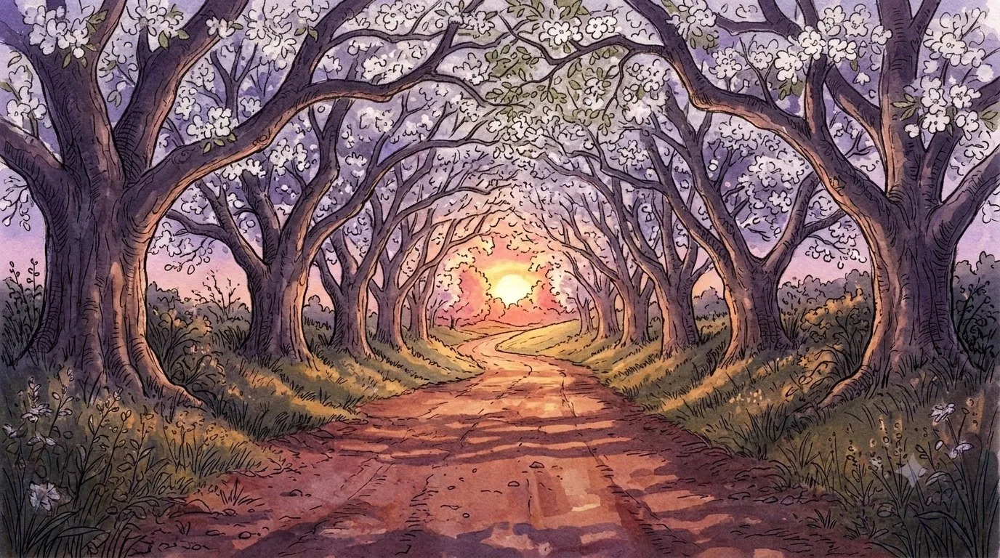

1장 · 기차역의 기다림
▼ 눌러서 계속
예쁜 것을 톡! 눌러 보세요 · 0개

에이번리 마을 지도
앤이 되어 마을을 돌아다니며 사람들을 만나고,
예쁜 곳마다 이름을 붙여 보세요.
시험판 · 1장만 들어 있어요
하늘소
에이번리 마을은 넓어서
옆으로 눕혀야 잘 보여요.

앤이 되어 마을을 돌아다니며 사람들을 만나고,
예쁜 곳마다 이름을 붙여 보세요.
시험판 · 1장만 들어 있어요